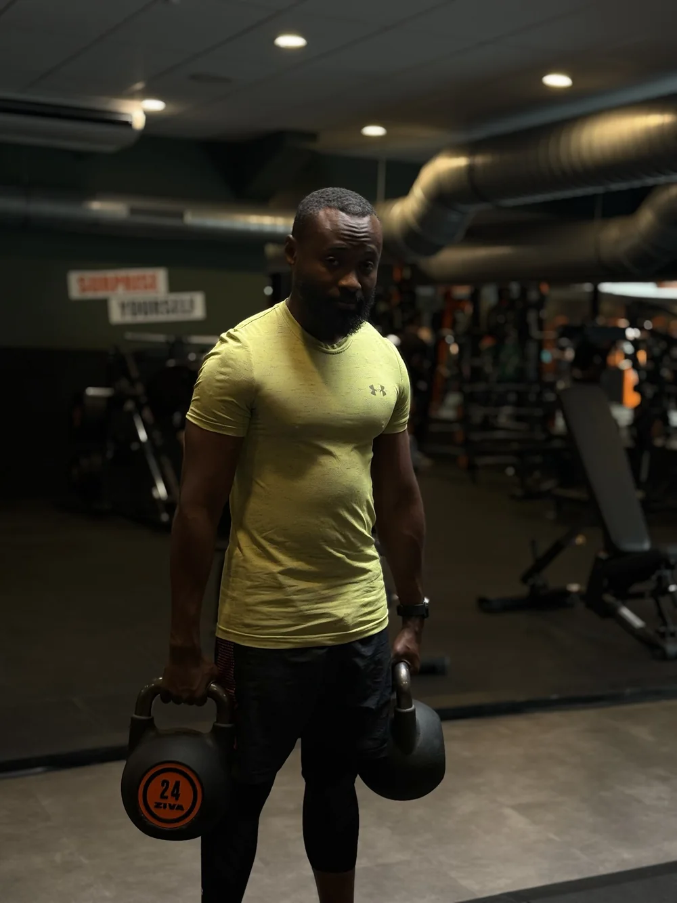
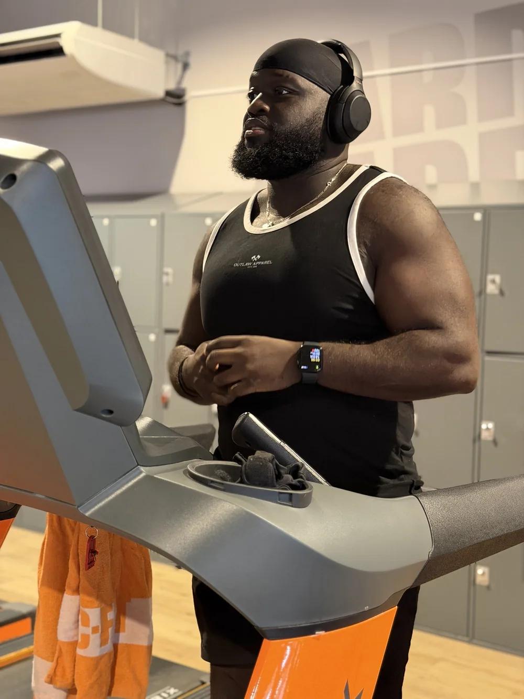
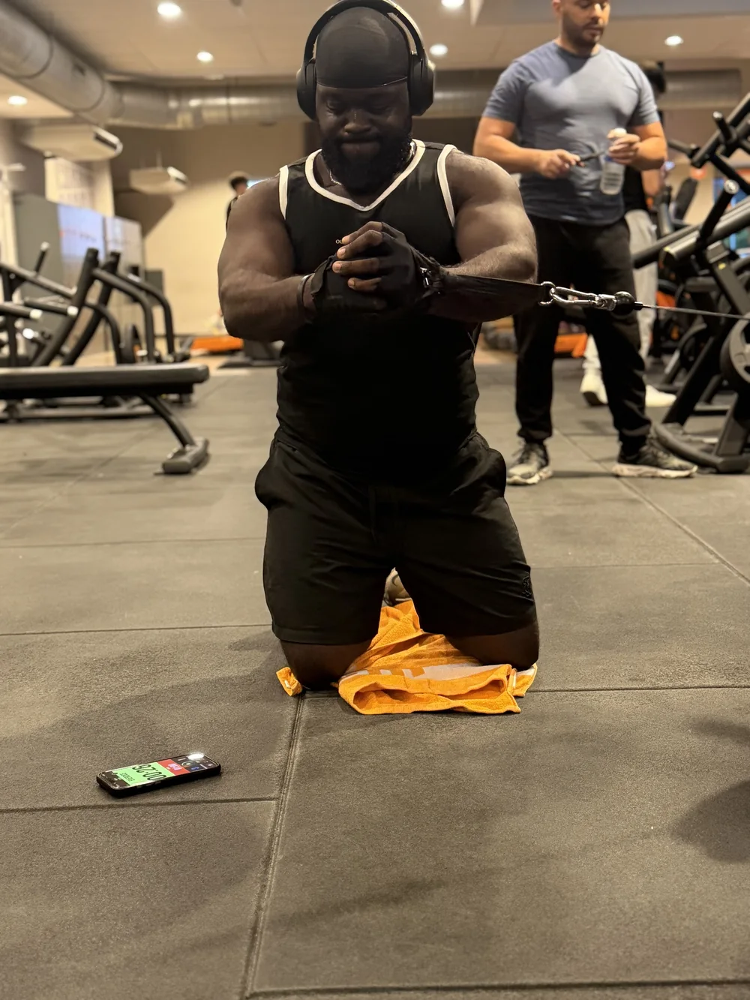
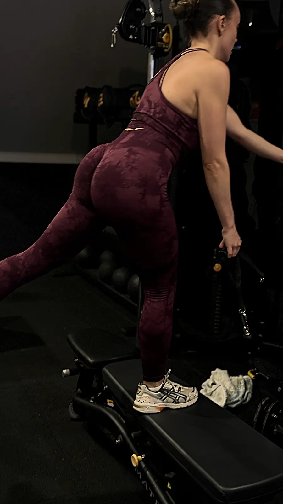

Méthode.
Comprendre, construire, observer, ajuster : ta préparation part de ton niveau réel et avance avec toi, séance après séance.
Focus sur le travail. La performance suit.
Tu sais pourquoi tu fais chaque séance. La progression se construit à partir de ce que montre le terrain : charges réalisées, sensations, récupération et résultats des tests.
-
Comprendre
On clarifie ton objectif, ton calendrier, tes disponibilités et tes contraintes physiques.
-
Construire
Je découpe ta préparation en séances cohérentes, avec des consignes précises pour chaque exercice.
-
Observer
Tu enregistres tes séances : charges soulevées, ressenti et tests adaptés à ton sport.
-
Ajuster
On relit les résultats ensemble et on choisit la prochaine étape, en gardant le contexte en tête.
Puis un nouveau bloc commence, construit sur ce que tu viens d’apprendre.
Ce qui ne change jamais
- Un objectif et une échéance, quand ils existent.
- Un entraînement lisible, dans l’ordre d’exécution.
- Des résultats saisis réellement, jamais inventés.
- Des ajustements discutés entre nous.
En séance.
Force, cardio, renforcement : chaque séance a sa place dans le programme.
-

Force -

Développé couché -

Cardio -

Gainage -

Port de charge -

Renforcement -

Conditionnement


Le suivi continue entre les séances
FOCUS LAB, c’est l’app de Focus & Performance. Ton programme, tes séances, tes bilans et nos échanges au même endroit, sur ton téléphone.
Mon espace.
Prochaine séance
BUILD, bas du corps
Objectif monter le volume des jambes
Ta forme.
Indice de forme
Calculé à partir de ton état du jour
Ta progression.
ExempleSquat avant, charge de travail
+12,5 kg en 8 semaines
Ratio de charge
1,1
Records
3
- Ta séance du jour
- Les exercices dans l’ordre, avec séries, répétitions, charges et temps de repos.
- Plus de 900 vidéos
- La démonstration de chaque exercice, pour reproduire le bon geste.
- L’effort bien noté
- Un guide RPE et RIR pour noter chaque série et ta séance entière.
- Ton état du jour
- Sommeil, énergie et sensations, pour adapter la charge au bon moment.
- Bilans et records
- Ta progression mesurée, test après test.
- Minuteurs intégrés
- Tabata, HIIT, EMOM ou For Time, sans autre appli.
Ton espace est privé : seuls toi et ton coach y avez accès. Les données de suivi sont hébergées en France.
Déjà client ? Ouvrir FOCUS LAB
Quelle est ton excuse du jour ?
- Trop fatigué
- Pas le temps
- Il fait trop froid, ou trop chaud
- J’ai mal partout
- Pas d’humeur
- Demain sera mieux
- J’ai déjà bien fait cette semaine
- C’est pas le bon moment
Arrête les excuses. Commence par toi.
Trouver mon programme